homr maintainer briefing · 30 August 2026
This is a technical hand-off for upstream maintainers. It distinguishes a new general-purpose recognition checkpoint from optional repairs and from experimental downstream heads. It is intentionally not a release announcement.
Arm A is the current general-purpose candidate: a six-epoch fine-tune of the common scan-adapted starting checkpoint, retaining real OpenScore String Quartet (OSSQ) and v4 Lieder scan data while using PDMX-only replay. Against upstream checkpoint 426 on held-out data, it improves every measured recognition branch. The comparison is end-to-end, but not a causal ablation: 426 predates the current numerator/naturals vocabulary.
Three other things should not be collapsed into that result: (1) frozen structured-notation heads add a representation that upstream does not have, but only beaming/ties/advance have meaningful current held-out support; (2) deterministic repair passes work after recognition and do not change checkpoint scores; (3) the lyric/dynamic page stage is a separate detector/reader pipeline, not an inline decoder token change.
| held-out corpus | 426 | Arm A | difference | interpretation |
|---|---|---|---|---|
| OSSQ scans, 792 staves | 91.49 | 95.05 | +3.56 pp (95% CI +2.46,+4.63) | significant |
| PDMX, 3,349 staves | 83.97 | 88.08 | +4.11 pp (+3.19,+5.09) | significant |
| Lieder v4 scans, 300 staves | 87.23 | 94.54 | +7.30 pp (+4.38,+10.37) | significant |
For OSSQ the branch scores are pitch 90.41→94.55, rhythm 87.50→93.11, lift 90.00→95.50, articulation 92.65→94.93, slur 93.15→95.30, and position 95.25→96.91. For PDMX they are 79.88→84.60, 82.50→86.92, 83.68→88.24, 87.00→90.41, 86.22→89.83, and 84.56→88.51. The current-vocabulary caveat applies particularly to lift/position; time-signature beats were removed from both streams for this comparison.
These are high-difference cases, not representative examples. They are provided so a maintainer can choose the clearest presentation; the aggregate table above is the claim.
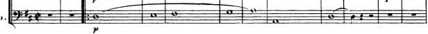
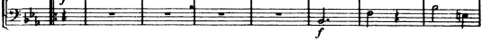
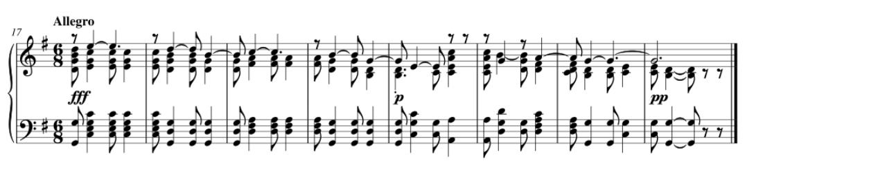
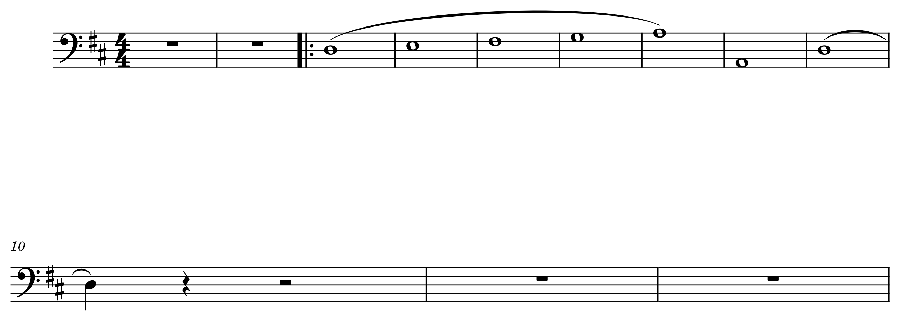
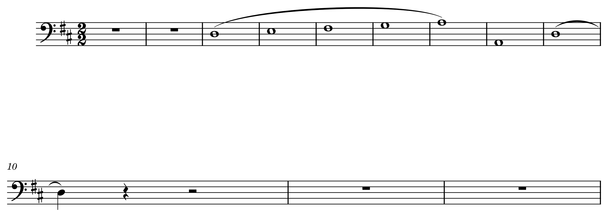
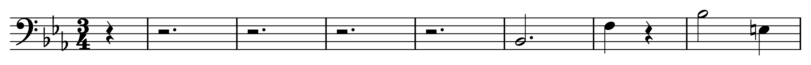
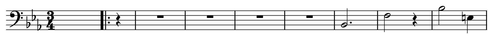
The largest improvement was not a clever loss. It was making supervision mean the same thing as the scan. The original OSSQ join used (page, system) between synthetic-pagination symbols and scanned-page crops. Different editions paginate differently; the join still found plausible rows. In a 900-staff audit across nine held-out scores, 56.7% of staves had collapsed by more than 50 points before correction, versus 7.9% after; scanned mean accuracy moved 46.8→89.9. Fifty-two human verdicts on the worst post-fix pairs found no mismatches.
We rebuilt labels from whole-score MusicXML through positional alignment, restored clefs and barlines/repeats lost by segment round-tripping, then reviewed difficult pairs in a notation-and-scan surface. Reverse fingerprint alignment was used as an independent check rather than trusting a single aligner. Review also exposed one-to-many line-break mismatches, shifted labels, truncation, and stale numerator tokens. The remaining sub-1% corpus defects have not moved accuracy reproducibly; the measured high-leverage data issue is tuplet supply: 1.78% tuplet notes in the training corpus versus 6.58% in OSSQ.
Detailed construction, checks, known asymmetries, and counts are in the companion dataset methods note.
Twenty-four small projections read a frozen decoder core to predict six beam levels, hooks, tie state, advance delta, stem direction, slur event/side, and dynamics. Freezing is deliberate: it isolates whether the existing representation contains the signal. On the current held-out split (1,759 usable sequences), exact six-level beam vector accuracy is 0.8634 (68,156/78,938); beam level 1 macro-F1 is .8467, level 2 .8020, level 3 .7926, level 4 .7149 (only 99 positions), hooks .8763, ties .9444, and non-trivial advance .7948 macro-F1 (.9678 micro; 54,460 positions).
The original export path silently discarded beam predictions: MusicXML generation had no beam references, so renderer auto-beaming could make output look plausible while losing the learned state. The repair was verified end-to-end on a real staff (20 beam elements, five coherent groups), not merely with unit tests. Three candidate examples should be drawn from the reviewed beam sidecar set before publishing; they are intentionally not substituted here with unverified renders.
| pass | what it does | evidence/status |
|---|---|---|
| Tuplet repair | Restores valid tuplet ratios after rhythm decoding; invalidates cached duration after rewrite. | End-to-end current pipeline: 2/5 selected real cases changed from six ordinary eighths to valid 3:2 start/stop tuplets; other cases no-op because already correct or decode differed. |
| Numerator repair/training | Adds explicit numerator vocabulary and a targeted continuation for rare 5 and 12. | Arm A remains default. Specialist seed: 5 exact 7→43 and 12 exact 0→64; neutral scores are not a consistent gain. |
| Cross-staff reranking | Forks only narrow-margin rhythm choices and chooses the decode best agreeing with sibling-staff cumulative barlines. | 200 pages: 428→339 combined structural findings (−20.8%); 81/899 systems improved; zero pages worse. Eight deterministic checks fire on 71.4% of pages; targeted proposals on 14.6%. |
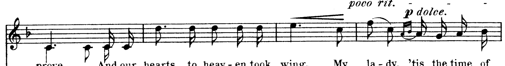
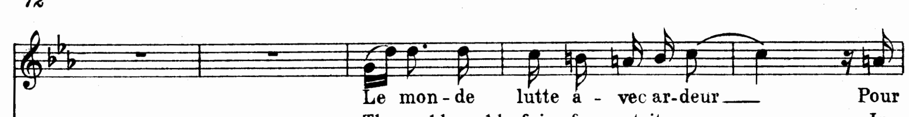
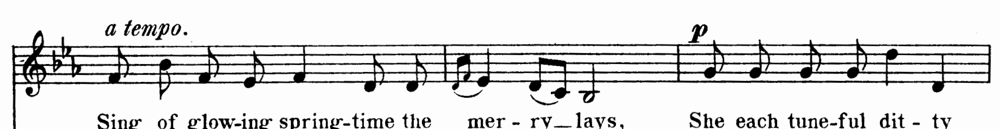
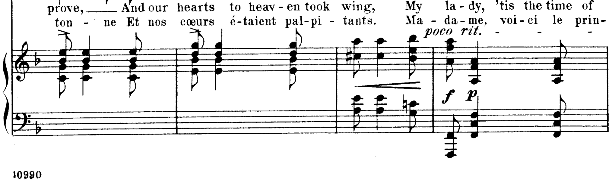
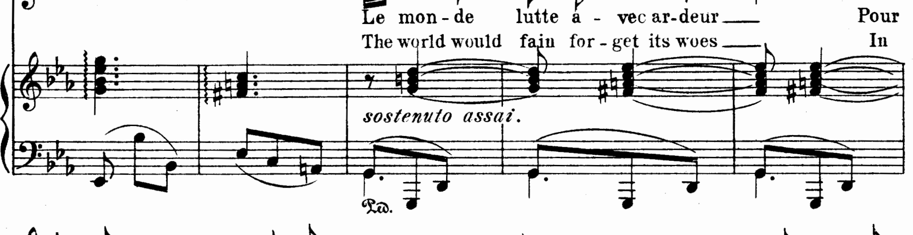
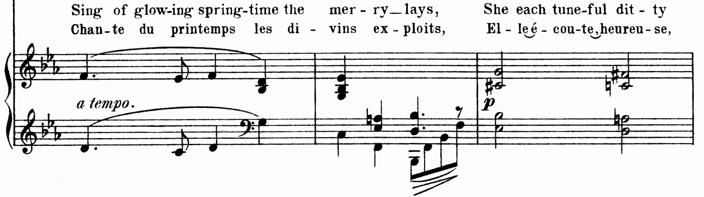
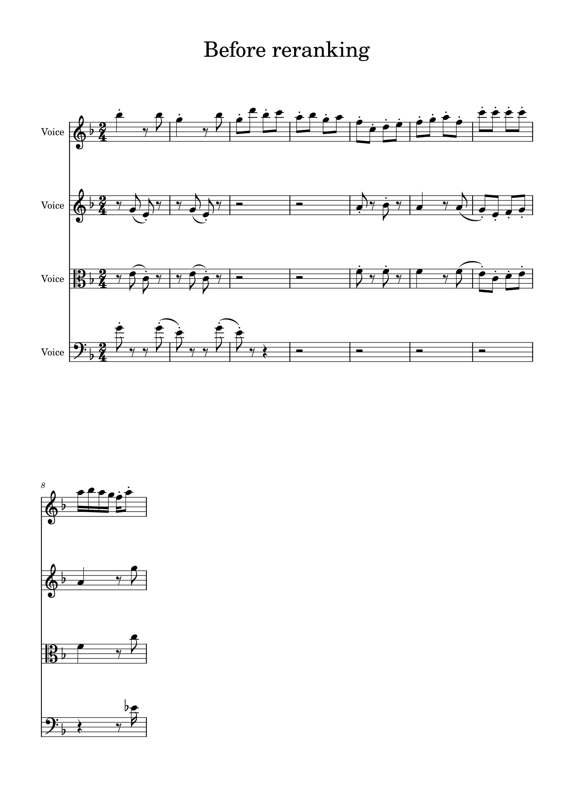
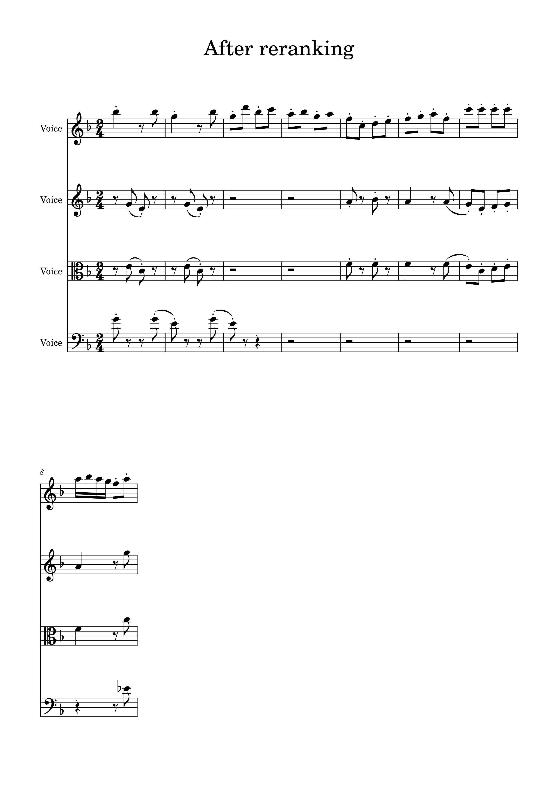
Two additional cross-staff pairs still need to be selected from the 200-page rerank audit. The same applies to numerator examples: do not substitute a score improvement table for a visual proof of a repair.
This is deliberately separate from staff recognition. OCR is first run over scanned pages; only reads agreeing with score text become real-scan supervision. That gives no-manual-box data but means a correct detection missed by OCR can be scored as false positive. The detector supplies regions; a text recogniser reads lyrics, while dynamics need a closed marking classifier and positional attachment rather than OCR text.
| held-out page class (307 pages) | precision | recall | F1 | ground-truth boxes |
|---|---|---|---|---|
| Lyrics | 66.7% | 94.1% | 78.1% | 3,555 |
| Dynamic | 75.9% | 93.9% | 84.0% | 429 |
| Measure number | 75.5% | 94.9% | 84.1% | 78 |
Tempo, staff text, expression, and fingering are not ready for an always-on output: their page-level precision is respectively 16.2%, 9.9%, 4.4%, and 0% in the adopted detector. Real scan data is decisive for lyric localisation (real-scan patch IoU .581 synthetic-only vs .966 with scan data), but patch scores are not page quality. This is why we report page boxes and retain the model boundary.
Adopt Arm A as the candidate to independently reproduce and score against your own upstream fixtures. Keep cross-staff reranking and tuplet repair opt-in post-decode passes. Treat the rare-numerator continuation as a specialist model. Keep structured heads and Stage 3 behind their own contracts until their missing evaluation/export/UI links are complete.